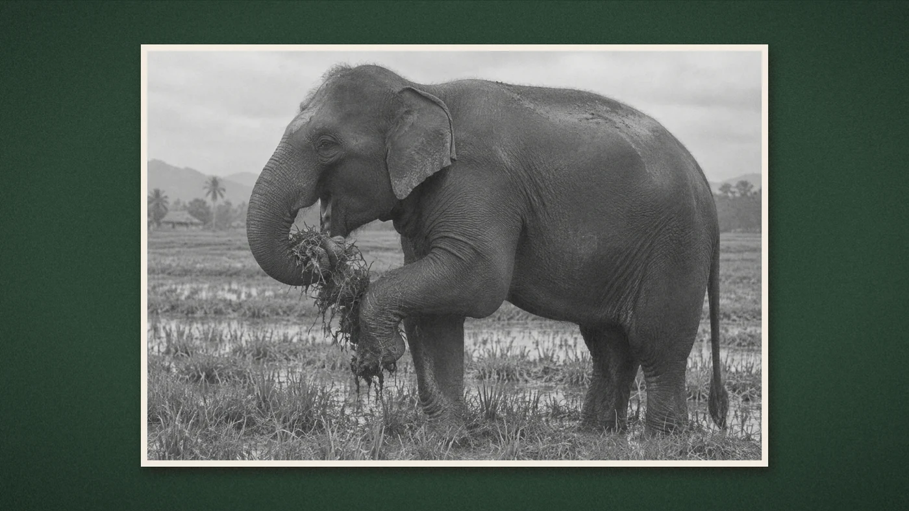

George Orwell’s 1936 essay, told in his own words: a young police officer in Burma, an elephant in a paddy field, and a crowd that wants a shot. This time the reader holds the rifle.
The words are George Orwell’s, from “Shooting an Elephant” (New Writing, 1936), cut but not rewritten, read by an ElevenLabs v4 voice (“daniel”); the crowd’s laughter is six more ElevenLabs voices. Archive pictures, music and two sound recordings are public-domain or CC0 works from Wikimedia Commons, listed below. Where no photograph exists, the scenes are reconstructions made with an image model (gpt-image via OpenRouter): Orwell as the young officer, the orderly, the football match, the rampage, the body, the double rifle, the club, the painted town of Moulmein, and the grazing elephant and every stage of its shooting, including the cover; the novice who turns and grins is an altered archive photograph. The silhouettes, maps and theatre are drawn in code, as are the other sound effects. Type: Oswald and EB Garamond (SIL Open Font License, lib/fonts/).